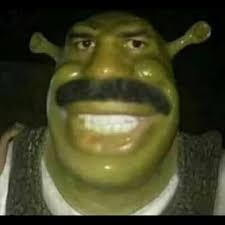
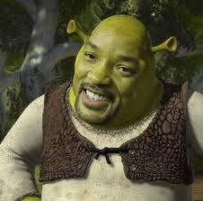
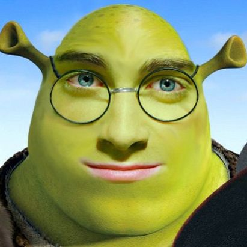

Shrek es una película de comedia estadounidense de animación por computadora estrenada en 2001 basada en el libro homónimo de William Steig de 1990. Es la primera entrega de la franquicia Shrek. Andrew Adamson y Vicky Jenson en su debut como directores de largometrajes, dirigieron la película a partir de un guion escrito por Joe Stillman, Roger S. H. Schulman y el equipo de guionistas formado por Ted Elliott y Terry Rossio. Está protagonizada por las voces de Mike Myers, Eddie Murphy, Cameron Diaz y John Lithgow. En la película, el ogro Shrek (Myers) encuentra su hogar en el pantano invadido por criaturas de cuentos de hadas desterradas por Lord Farquaad (Lithgow). Con la ayuda de un burro parlante (Murphy), Shrek acepta rescatar a la princesa Fiona (Diaz) para poder recuperar su pantano.